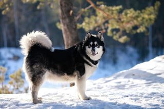

Summit Farms Rescue

Here you will find information about the various dog breeds helped by Summit Farms Rescue. We have also included links to other sites with more information.
"Alaskan Husky" is a name that can refer to any number of Nordic working breeds and is not a breed officially recognized by the American Kennel Club (AKC). Alaskan huskies are bred to be sled dogs, with emphasis on ability over looks and not being an official breed, they do not have a "breed standard." That said, most Alaskan huskies have pointed ears that stand up high on their heads, have a short to medium-length coat, and either a wedge-shaped head or a long muzzle. Typically, they weigh between 38 and 50 pounds and have high levels of engery, agility, and intelligence.
Alaskan huskies make great working or competitive dogs, but can be the perfect companion for an active family or individual who is looking to spend time excersing and enriching the life of their pet. Activity is the key to a happy, healthy Alaskan husky and they can develop destructive or problematic habits if not kept active both physically and mentally. This drive to act makes the Alaskan husky an amazing sled dog, but also a good companion for the active owner/family.
For more information on the Alaskan Husky, please visit this Alaskan Husky Wikipedia article.
Alaskan Malamutes are large, strong, and loyal dogs with long, fluffy coats and an up-curled tail. They are 23 to 25 inches tall at the shoulder and weigh between 75 to 85 pounds with a heavy frame and dense coat. This helps them work and play in the frigid cold for long hours, but Malamutes also enjoy cuddling up with their “pack” at the end of the day.

While huskies excel at pulling lighter sleds quickly, Malamutes are “freighters” who can pull heavy loads over long distances. They are one of the oldest dog breeds and named after the Mahlemiut, an Inuit people from northwestern Alaska, where this breed was developed. Along with pulling heavy loads on sleds, Malamutes were traditionally used for carrying packs, finding holes in the ice seals use for breathing, and helped to distract bears during hunting trips. Today, these fluffy giants can make wonderful companions with consistant and loving guidance from their owners.
The AKC has breed information on the Alaskan Malamute here.
Photo of Brock on left is used with permission from Alicia Michelle.
The Alaskan Klee Kai (AKK) can be described as a miniature version of the husky. They are between 12 and 17 inches tall at the shoulders and can weigh between 6 and 25 pounds, making them one of the smaller Alaskan breeds.
AKK's were bred for their smaller size and are a relatively young breed, with a history dating back to the 1970's. Linda Spurlin is the breed's developer and selected husky dogs based on size that also met health, structure, and temperament standards to create the versital breed we have today.
The Alaskan Klee Kai Club of America can provide further information about this mini Alaskan breed.
American Eskimo Dogs are small, smart, and friendly balls of white fluff. They are compact at 9 to 19 inches, but are full of energy, intelect, and a desire to please, making them one of most trainable dog breeds.
The American Eskimo was originally named the German Spitz, but got a new name after World War I to distance the breed from its European heritage. It started out as a farm dog in the midwest but quickly became a popular dog for entertainers. Its trainability and outgoing nature make it a good option for any owner, as long as they are willing and able to keep their mind and body busy and maintain regular grooming.
For more information, please visit the AKC's American Eskimo page.
Siberian Huskies are a compact sled dog, bred to pull sleds quickly and over great distances. They are of medium size, topping out around 60 pounds. They are high engery and intelligent dogs who love doing their job and get along well with people and other dogs. Their drive to chase makes friendship with cats difficult, but not impossible with proper training.
Modern Siberian huskies are descended from the Seppala Siberian Sled Dog (see the last description on this page), which came from dogs brought to Alaska from northeastern Asia. Siberian huskies made headlines when they pulled the sled of medicine from Anchorage to Nome, Alaska in little more than five days back in 1925. This was the inspiration behind the Iditarod sled dog race, established in 1973.
For more information on Siberian huskies, please visit the AKC's Siberian Husky page.
For Iditarod information, see Iditarod.
Samoyeds are often called the smiling sled dogs, or Sammies for short. The upturn to their mouth not only makes them look happy, but prevents drooling, which could otherwise lead to uncomfortable facial ice formation. They are a larger sled dog, at 19 to 23 inches to the shoulder, and are covered in a long white coat that helps keep them warm in the snow. They are active, friendly and intelligent, meaning they will take well to having a job to do. A bored Sammie can get into trouble and they can challenge authority, so consistant training is a must.
Sammies were originally bred by a semi-nomadic people as sled dogs that also kept owners warm in their tents on the frozen tundra. The dogs were also used to hunt reindeer, until the people started herding reindeer. Then the dogs' jobs changed to moving and protecting these herds. When they were introduced to the people of Britain, they became one of the top picks for sled dogs used to explore frozen expanses.
More Samoyed information can be found on the AKC's Samoyed page.
The only sled dog used in the Greenland, the Greenland sled dog is closely related to the Candian Eskimo Dog, but is considered of national and cultural importance to the people of Greenland. Laws are in place to protect the transport or export of any Greenland sled dog in northern and eastern Greenland. Unfortunately, the number of Greenland dogs is in decline as the use of motor vehicles increases and the area of sled usage decreases due to global climate changes.
The Greenland dog has been a recognized dog breed since 1880, making it one of the oldest breeds. It was used during the 1912 Antartic expedition and is still used as a sled dog in Greenland today. Purity of the breed is closely monitored in Greenland, and most dogs are working dogs, not family companions. These dogs can require owners with working dog knowledge and experience for the best home placement.
Wikipedia article on Greenland dog.
This link will take you to the Greenland travel site Greenlandic Sled Dog site.
Seppala Siberian Sled Dogs (SSSD) came from dogs originally brought to Alaska from eastern Siberia between 1908 and 1930. The breed was developed by Leonhard Seppala (pictured on left) beginning in 1915 and led to the further development of other Alaskan breeds, such as the husky. It is a working dog, bred to pull sleds in cold environments and exhibits speed, strength, and endurance while working.
The SSSD was a popular sled dog in the mid-1900's, but declined following the retirement of several breeders from 1950 to 1963. And while a few breeders tried to maintain the bloodline of the original Seppala dogs, popular interest shifted to huskies, and despite a brief resurgence in the 1970's, the number of SSSD's declined. With dog-sledding falling out of favor and conflict between some breeders and breed clubs, the number of SSSD's continues to fall. Those loyal to the original bloodlines of the breed may argue that there are no longer any "true" SSSD's in existence today.
Regardless of the purity of their lineage, Summit Farms Rescue works to help SSSD's and their desendants as best we can.
For futher information about Seppala Siberian Sled Dogs, please visit: Seppala Kennels and follow the links on the left side of the page. Mr. Bragg, the owner of Seppala Kennels, has first-hand experience with this breed.
The International Seppala Siberian Sleddog Club is another source of both breed and historic information.